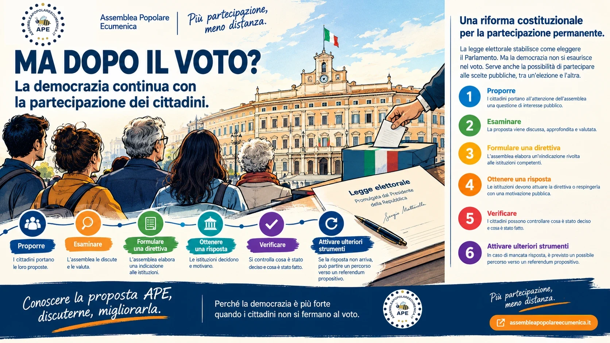

La nuova legge stabilisce come eleggere il Parlamento. Resta aperta una questione fondamentale: come possono i cittadini incidere sulle decisioni pubbliche dopo aver votato? È qui che si inserisce la proposta dell’Assemblea Popolare Ecumenica (APE).
Giovedì 8 ottobre 2026 la Camera ha approvato in via definitiva la nuova legge elettorale, che i giornali chiamano «Stabilicum» (per i critici, «Melonellum»). Il giorno dopo, 9 ottobre, in serata, il presidente della Repubblica Sergio Mattarella l’ha promulgata, senza rinviarla alle Camere e senza una lettera di osservazioni. L’iter parlamentare è concluso; per l’entrata in vigore occorre ancora la pubblicazione in Gazzetta Ufficiale. La riforma sostituirà il sistema elettorale attuale (il Rosatellum) con nuove regole per l’elezione di Camera e Senato.
La legge introduce un sistema proporzionale con un premio di maggioranza per la coalizione che raggiunge il 42% dei voti (la soglia, nel corso dell’esame, è stata alzata dal 40%), capilista bloccati e fino a tre preferenze con obbligo di alternanza di genere. Prevede inoltre che le coalizioni indichino prima del voto il candidato alla Presidenza del Consiglio, con la precisazione che restano «salve» le prerogative del Presidente della Repubblica. La maggioranza sostiene che il nuovo sistema favorisca la stabilità dei governi. Le opposizioni, e diversi giuristi, lo giudicano incostituzionale su alcuni punti e preparano ricorsi in una trentina di distretti di Corte d’appello, per portare la questione alla Corte costituzionale: tra i punti contestati ci sono il premio di maggioranza al Senato assegnato su base nazionale, la mancanza di alternanza di genere tra i capilista bloccati e le firme richieste per presentare le liste: alcune migliaia per collegio (6mila secondo i giornali), da cui sono esentati i partiti già rappresentati in Parlamento. Non tutti i commentatori ritengono probabile una bocciatura: alcuni si aspettano che la Consulta, se interverrà, corregga la legge con una pronuncia direttamente applicabile, senza annullarla. Secondo le previsioni riportate dai giornali, la decisione della Corte potrebbe arrivare entro febbraio, ma i tempi non sono certi. Anche la data delle elezioni è aperta: i giornali parlano di primavera 2027 oppure di fine legislatura, in autunno.
Il confronto su queste regole è importante. Ma c’è una domanda che rimane, qualunque sia la valutazione della riforma e qualunque forza politica vinca le prossime elezioni.
Che cosa può fare un cittadino quando, dopo il voto, una questione che riguarda la sua comunità non trova risposta?
Il voto è indispensabile. Ma non risolve tutto.
Con le elezioni scegliamo i nostri rappresentanti e affidiamo loro il compito di assumere decisioni, governare e legiferare. È una funzione essenziale della democrazia rappresentativa.
Tuttavia, tra un’elezione e la successiva, emergono problemi nuovi, proposte trascurate, servizi che non funzionano e decisioni sulle quali i cittadini vorrebbero poter intervenire in modo più concreto.
Una persona può scrivere al proprio Comune, partecipare a un incontro pubblico, firmare una petizione o rivolgersi a un rappresentante eletto. Sono strumenti utili, ma non garantiscono, di per sé, un percorso istituzionale stabile nel quale una proposta dei cittadini venga esaminata e riceva una risposta pubblica, motivata e verificabile.
Il punto non è pretendere che ogni richiesta venga accolta. Nessuna democrazia può promettere questo: le risorse sono limitate, gli interessi possono essere diversi e le decisioni devono rispettare la legge e i diritti di tutti.
Il punto è un altro: una proposta ragionevole può essere respinta, ma dovrebbe essere possibile conoscere le ragioni della decisione e verificare che la questione sia stata realmente esaminata.
La stabilità di un governo non è la stessa cosa della partecipazione
Una legge elettorale può cercare di rendere più chiaro il risultato delle urne e di favorire la formazione di una maggioranza. È una questione istituzionale distinta da quella della partecipazione dei cittadini.
Anche un governo che durasse per l’intera legislatura dovrebbe affrontare il problema del rapporto con la popolazione. E anche un Parlamento composto in modo proporzionale dovrebbe trovare strumenti per ascoltare, valutare e discutere le proposte che arrivano dalla società.
La stabilità riguarda la capacità delle istituzioni di governare nel tempo. La partecipazione riguarda anche la possibilità dei cittadini di contribuire alle scelte pubbliche nel tempo.
Sono due esigenze diverse. Una non sostituisce l’altra.
Per questo il dibattito sulla legge elettorale può essere l’occasione per porre una domanda più ampia: vogliamo limitarci a scegliere chi decide, oppure vogliamo anche costruire procedure attraverso le quali continuare a partecipare alle decisioni?
APE: una proposta per intervenire anche dopo il voto
L’Assemblea Popolare Ecumenica nasce attorno a questa seconda domanda. APE non è un partito, non presenta candidati e non si propone di sostituire il Parlamento o gli enti locali.
La sua proposta è una riforma costituzionale che introduce un percorso istituzionale permanente di partecipazione, attraverso assemblee di cittadini selezionati mediante sorteggio, ai diversi livelli territoriali.
L’obiettivo è trasformare la partecipazione da semplice manifestazione di una richiesta in un procedimento riconoscibile, con passaggi e responsabilità definiti.
In sintesi, il percorso proposto prevede:
- Proporre: i cittadini portano all’attenzione dell’assemblea una questione di interesse pubblico.
- Esaminare: la proposta viene discussa, approfondita e valutata.
- Formulare una direttiva: l’assemblea elabora un’indicazione rivolta alle istituzioni competenti.
- Ottenere una risposta: l’istituzione interessata è chiamata ad attuare la direttiva oppure a respingerla con una decisione e una motivazione pubbliche, secondo le procedure previste dalla riforma.
- Verificare: diventa possibile controllare che cosa è stato deciso e che cosa è stato fatto.
- Attivare ulteriori strumenti: in caso di mancata risposta entro i termini previsti dalla proposta, è contemplato un possibile percorso verso un referendum propositivo.
Questi sono gli elementi essenziali del modello proposto da APE. Per diventare diritto vigente, la riforma dovrebbe naturalmente seguire il procedimento costituzionale previsto per la sua approvazione.
Non un’altra promessa: una procedura da discutere
Una proposta di riforma istituzionale deve essere giudicata anche per le sue difficoltà concrete.
Come si scelgono i cittadini sorteggiati? Come si garantiscono informazioni attendibili e un confronto tra posizioni differenti? Come si evitano pressioni organizzate? Quali materie possono essere sottoposte alla procedura? Come si tutelano i diritti fondamentali e le competenze degli organi eletti?
Sono domande necessarie, non obiezioni da mettere a tacere. Una partecipazione credibile deve prevedere regole trasparenti, garanzie, limiti e controlli. Deve inoltre rispettare la responsabilità degli eletti, che non viene cancellata dal coinvolgimento dei cittadini.
È su questi aspetti che una proposta come APE deve essere conosciuta, esaminata e discussa pubblicamente.
La domanda da cui ripartire
La firma della nuova legge elettorale chiude una fase del confronto politico: quella sulle regole con cui saranno eletti i prossimi parlamentari. Non chiude, però, la discussione sul rapporto tra cittadini e istituzioni.
Alle prossime elezioni gli italiani saranno chiamati a scegliere i propri rappresentanti secondo le nuove regole, una volta entrate in vigore. Ma il giorno dopo il voto torneranno le questioni concrete dei territori, dei servizi, del lavoro, dell’ambiente e delle decisioni che incidono sulla vita quotidiana.
Chi le porterà nelle istituzioni? Come saranno esaminate? Quale risposta potranno ricevere i cittadini? E come potranno verificare gli esiti?
Non basta porre queste domande: occorre discutere strumenti capaci di dare loro una risposta istituzionale.
È questa la ragione per cui APE ritiene necessario aprire un confronto sulla partecipazione permanente. Non perché una parte politica debba essere sostituita da un’altra, ma perché la democrazia può essere discussa e migliorata anche nel rapporto quotidiano tra cittadini e istituzioni.
Il voto sceglie chi decide. La partecipazione permette ai cittadini di continuare a farsi ascoltare da chi è stato scelto.
La questione, quindi, non è soltanto quale legge elettorale avremo. È anche quale spazio vogliamo riconoscere ai cittadini tra un’elezione e l’altra.
APE invita a conoscere la proposta, verificarne le regole e discuterne apertamente. Perché la partecipazione democratica non dovrebbe cominciare e finire nel giorno in cui si vota.
Scopri la Rete APEPer approfondire la proposta o parlarne con altri: la Rete APE ha una chat WhatsApp aperta a chi sostiene il progetto (entra qui). Attenzione: il tuo numero di telefono sarà visibile agli altri partecipanti e l'ingresso viene approvato dagli amministratori.